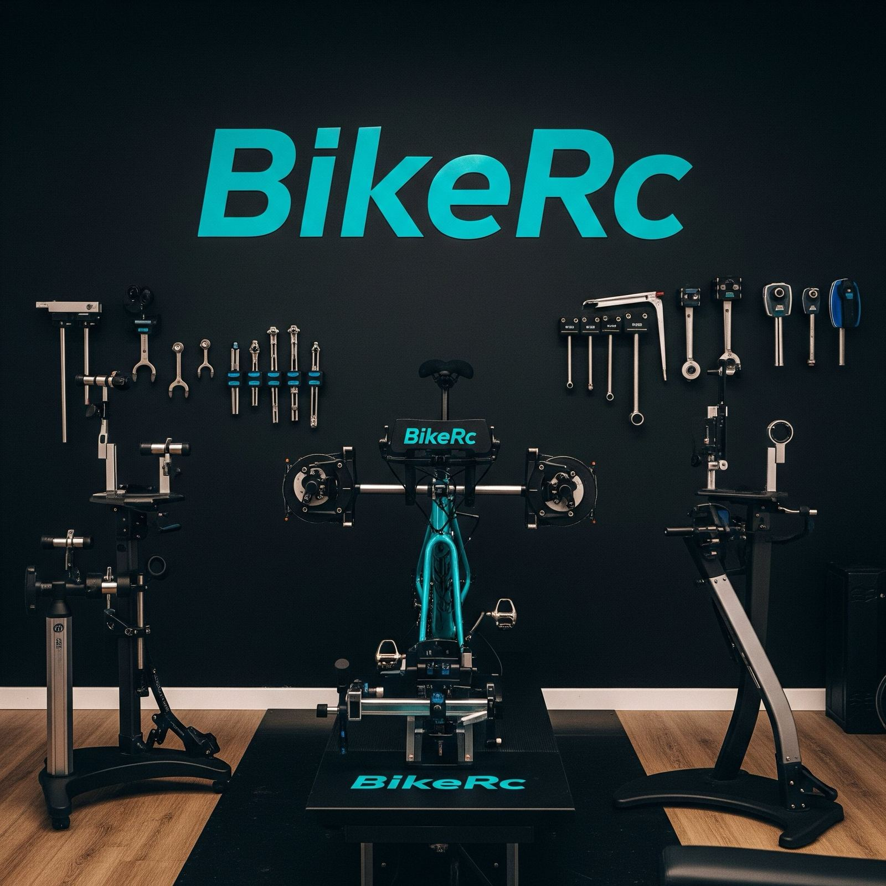

Fitting rowerowy z analizą obrazu
Każdy ruch pod kontrolą.
Kamera widzi Twoje biodra, kolana i stopy w trakcie jazdy. Algorytm BikeRc mierzy kąty i zakresy ruchu, a my ustawiamy rower tak, żeby jechało się szybciej i bez bólu.

Innowacja, która jedzie z Tobą.
Nie przyklejamy markerów i nie podpinamy kabli. Autorski algorytm BikeRc odczytuje pozycję z obrazu z kamery, więc pomiar jest szybki, a Ty jedziesz tak jak zawsze.
Informacje o realizowanym projekcieFitting w trzech krokach
Dwie kamery, pełny obraz.
Widok z boku pokazuje kąty w kolanie, biodrze i pochylenie pleców. Widok z przodu pokazuje, czy kolana pracują prosto i czy jedna strona nie przejmuje więcej pracy niż druga.
Kąty stawówkolano, biodro i bark w każdym obrocie korby
Symetriaróżnice między lewą a prawą stroną
Ustawienie stóppozycja bloków i szerokość ustawienia
Dla kogo jest BikeRc
Wybierz, żeby zobaczyć szczegóły.
Chcesz poznać szczegóły?
Napisz do nas. Odpowiemy na pytania, pokażemy system w działaniu i umówimy termin pomiaru.

Każdy ruch pod kontrolą, każda jazda przyjemnością.
© 2026 BIKERC Prosta Spółka Akcyjna, Rzeszów